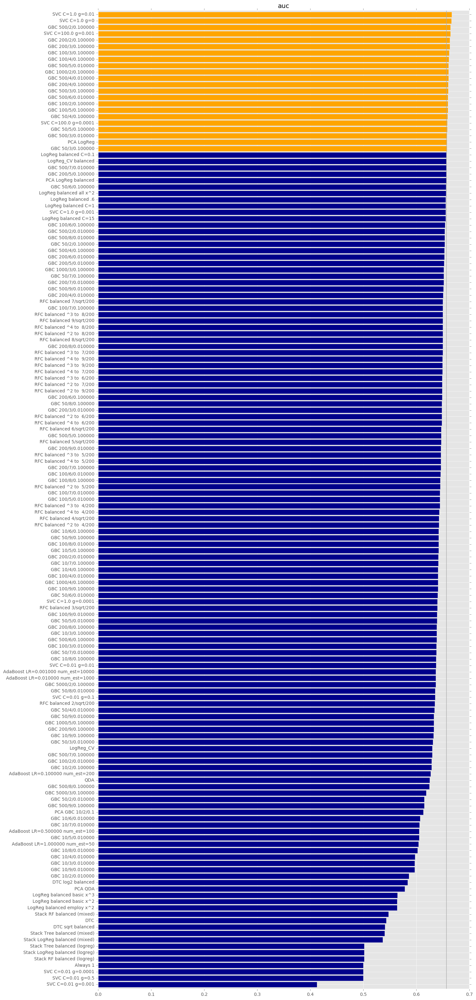
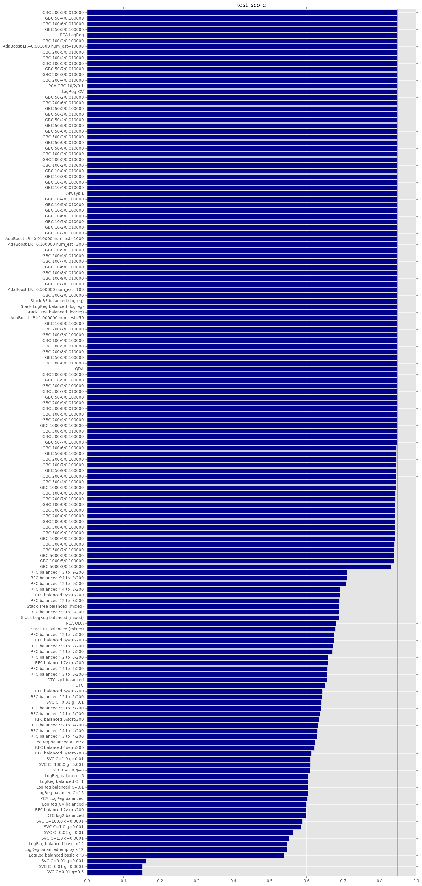
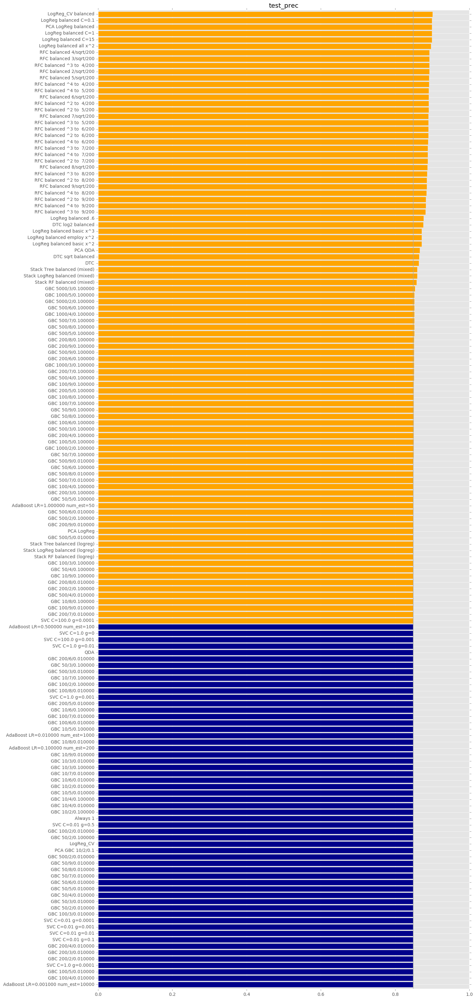

Predicting Loan Outcomes using Machine Learning
David Modjeska and Andrew Greene
CS109a: Introduction to Data Science
Harvard University, Autumn 2016
Full Modelling Results
Highlighted cells indicate results exceeding baseline.
| Model |
auc |
test_f1 |
test_prec |
test_score |
|---|
[Skip to Test Classification Accuracy]
ROC Area Under Curve
Orange-colored bars indicate results exceeding baseline.

[Skip to Test Precision]
Test Classification Accuracy
Orange-colored bars indicate results exceeding baseline.

[Skip to Using Payback Ratio]
Test Precision
Orange-colored bars indicate results exceeding baseline.

Return to main report